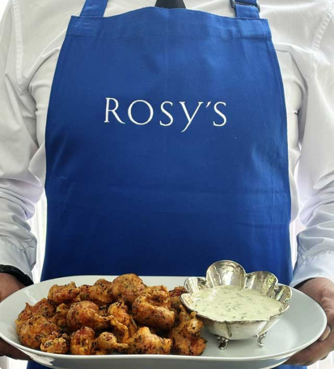

Rosy's
The perfect private catering venue in
Willesden Green, London NW2,

The perfect private catering venue in
Willesden Green, London NW2,
Whatever your occasion, Rosy’s place provides a truly individual setting: perfect for those wishing to celebrate in style, in a magical atmosphere.
The magnificent garden guarantees privacy and quiet spaces. Its Japanese-style pavilion, recently renovated, can host up to 40 seated guests and has standing room for many more.
Thank you for treating us to a most enjoyable and delicious, tasty and visually appealing lunch yesterday in your beautiful pavilion surrounded by the beautiful garden.
I was able to forget about my usual life and allow myself to be transported to a different place as if I were on holiday.
Anne Holve
Thank you, Rosy. It was a truly amazing celebration with so much love and joy shared with all our most precious loved family and friends.
Friday night was a great success with our guests absolutely bowled over by the venue, the food, the service, the beauty and warmth of your home. Thank you for making it so special for us. Much love from our fragile heads today
Mariette Tigler-Wybrandi
London’s favourite
venue for a unique
dining experience
Situated in Willesden Green, Rosy’s is London’s favourite stylish garden and amazing venue for celebrating special moments. With two most important ingredients: unique, charismatic chef
Rosy Walker and the money-saving “bring your
own drinks” policy.
Whatever the size of your group, every guest will
enjoy the same private, sophisticated, stress-free experience in calm and peaceful surroundings.
To make your experience even more relaxed, free
parking is available near the house, with many
public transport options within easy walking
distance.
With its wood-burning fire, the air-conditioned
pavilion ensures this is an all-weather venue.
And it looks out onto a mature, beautiful, wild
garden, lit by concealed candles and lights after darkness falls.
The pavilion has been newly extended to seat up
to 40 guests and, by also using a marquee over
the patio area, the number of guests can be
increased to 70.
At Rosy’s, service is attentive but never
intrusive: Rosy’s fabulous team of
professional butlers will look after your
needs superbly.
And yet, while the style is elegant and
refined, it is never stuffy. That’s the
Australian in Rosy coming out!
Rosy herself can also be relied on to
deliver outstanding meals which help
create the kind of joyous experience
that birthday parties and other special
occasions should be, but so often
aren’t, because organising them can
be so stressful.
Rosy’s elegant style and the ambience
of the setting means you can arrive
relaxed and leave replete.

Rosy’s place offers the perfect
environment and service to suit any
occasion – be it a milestone birthday, or
the celebration of a loved one’s life.
Organising a funeral, wake or memorial service
will always be an unexpected undertaking at an emotional time. The lack of bespoke venues
offering a private, dignified, intimate, and
peaceful environment can add to the stress.
Rosy’s place and her bespoke service provide the
ideal solution to this difficult circumstance. With
her husband David, Rosy will help you take the
stress out of planning the occasion to suit your
wishes.
The garden and venue offer plenty of private
corners where to find quiet and a moment of
reflection.
Close family joined us from Scotland and all were enchanted by the
surprisingly beautiful location, truly delicious food (all food needs were
catered for individually and without fuss), courteous and discreet
service and warmth. The fire roared, the newly refurbished pavilion
glowed and we all relaxed and enjoyed each others’ company. Rosy
makes planning effortless, takes on any requests without issue and
creates a magical atmosphere with absolutely wonderful food. I had a
birthday party at Rosy’s in 2021 and now know that she really can
create the perfect atmosphere for whatever occasion you may desire.
Carolyn Gabriel
All of the food at Rosy’s can be adapted for any
dietary requirement. You can mix and match
dishes from any of the menu ideas listed below –
Rosy is always happy to listen and to discuss any
other preferences or ideas you may have.
Prices vary depending on the selected menu, the
time of the year, market food prices, how many
guests, whether the marquee is needed and
several other factors.
Do call or e-mail Rosy to talk about your hopes
and desires for your joyous event; then come and
see the amazing garden and pavilion, meet Rosy
and finalise everything.
Rosy’s brings you generous, stylish hospitality in a
unique and welcoming venue.
A menu idea for every occasion
Rosy's Story
Rosy Walker left rural Australia for
London when she was just 19 – and has
never looked back. Getting the taste for
French cuisine on a traditional Aussie
European tour, she gained her culinary
spurs by training in both London and
Paris.
Since then, extensive travel has further broadened her range of cooking styles
and skills which helped her become
Partner’s Chef at top UK legal firm Allen
and Overy for a decade and then cater
for multiple events ever since.
The unique twist in the tail is that, for
the last 14 years, these have mostly
taken place in the Japanese-style
dining pavilion in her own home
garden.
There, Rosy creates the magic -
always with the help of her handpicked
team of butlers who bring their own
expertise from serving at high profile
London locations and occasions.
They say you can’t buy experience but
that’s exactly what you do when you
book your special occasion at Rosy’s.